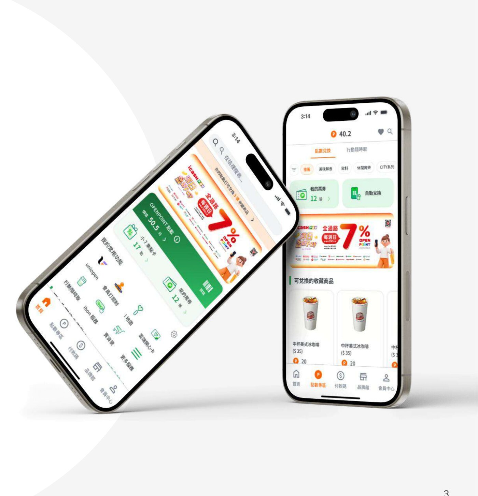

OPENPOINT Redesign
在兼顧品牌曝光的前提下，重新設計 OPENPOINT 的點數、票券與支付體驗，讓每一次消費都能更輕鬆兌換價值。
專案背景
OPENPOINT 為統一集團的會員生態系，目標是建立點數循環、帶動跨通路消費。然而隨著點數、票券、支付、電商與 BU 等不同需求陸續整合進同一個 App，功能持續擴張，我們好奇使用者是否也感受到同樣的便利，於是從近一年的使用者負評中尋找答案，發現問題多集中於廣告干擾、功能難找與操作複雜。
研究方法
透過 102 份有效問卷、6 位高頻使用者深度訪談與 統一 UX Manager 訪談，多角度理解使用者與產品現況，聚焦於熟悉多項 OPENPOINT 功能的高頻使用者，深入了解點數、票券與支付流程中的痛點與需求。研究發現問題多集中於資訊架構混亂、點數兌換、票券使用與支付方式缺乏整合。
How Might We
我們如何降低資訊密度與操作複雜度，並整合點數機制、票券使用與支付流程，讓使用者能快速且順暢地完成目標任務？
設計策略
在品牌曝光的前提下重整資訊架構、降低干擾；建立點數與票券使用邏輯，提升轉換與使用率；整合支付與優惠流程，優化結帳效率。原本階層過深、名詞模糊的資訊架構，被重塑為「首頁」「品牌館」「付款碼」「點數兌換」「會員中心」五大分類，並將「服務」頁的低頻功能整合進首頁常用功能區，把品牌商品資訊集中到獨立的品牌館，讓任務操作與行銷內容分離。
設計亮點
- 首頁資訊層級重構：Banner 置頂保留曝光，並將點數、集點卡、票券與條碼集中於會員資訊區，加大「我的常用功能」區塊，原本分散在服務頁的功能整合回首頁。
- 建立品牌館專區：品牌資訊獨立成 Tab，與功能導向內容分離，整合商品、活動與品牌內容，提升品牌傳達效果。
- 重構支付流程：提供支付方式餘額預覽，並讓使用者能在結帳頁面直接切換付款方式，不必退出重新操作。
- 票券兌換體驗重整：依過去使用行為與收藏偏好建立個人化推薦，並統一兌換與購買入口，將「我的票券」入口前移至首頁。
設計迭代與測試
我們招募 4 位使用 OPENPOINT 超過 3 年、每週使用 3–5 次以上的高頻用戶，針對「付款碼結帳並兌換商品」「品牌館瀏覽」等核心任務進行可用性測試。結果顯示使用者付款流暢度提升，但新版付款方式切換的可辨識度仍不足，於是透過強化資訊層級與視覺區隔提升可見性；同時發現使用者更傾向以商品分類而非品牌分類瀏覽品牌館，因此調整為商品分類導覽，其餘核心流程（點數兌換票券、票券兌換商品、出示會員條碼）皆順利完成任務並改善原先問題。
心得與反思
這個專案讓我重新思考設計師的角色——我們需要在商業目標與使用者體驗之間找到平衡，而不只是傾聽使用者。過程中我也發現，許多使用者提出的表層抱怨（例如「功能太多」「資訊很亂」）背後需要更深入的定義與挖掘，才能找到真正該解決的問題。此外，我也嘗試以 AI（Claude Code）快速生成介面原型，發現 AI 能有效統整研究資料，但仍難以掌握完整的商業目標與使用情境，設計仍需要人的判斷與脈絡理解來補足。